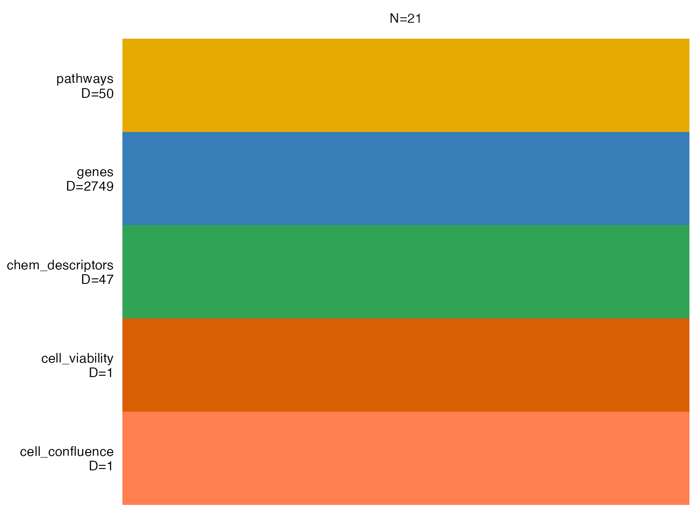
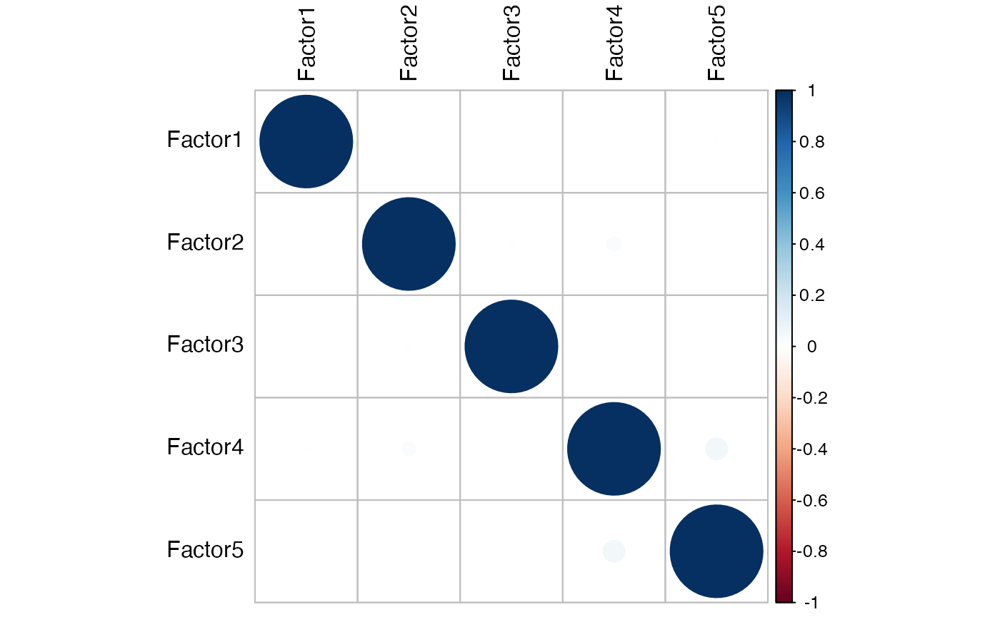
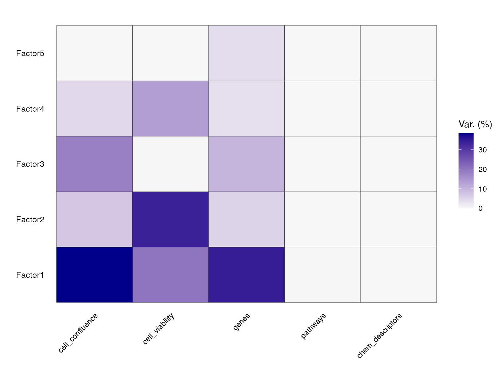
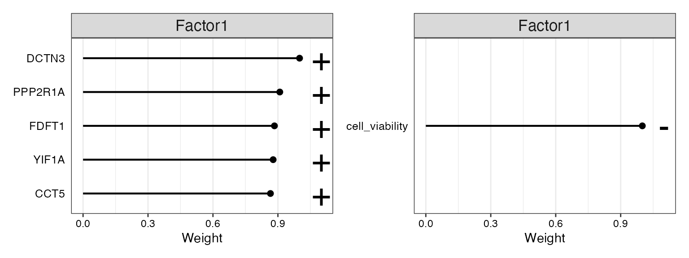
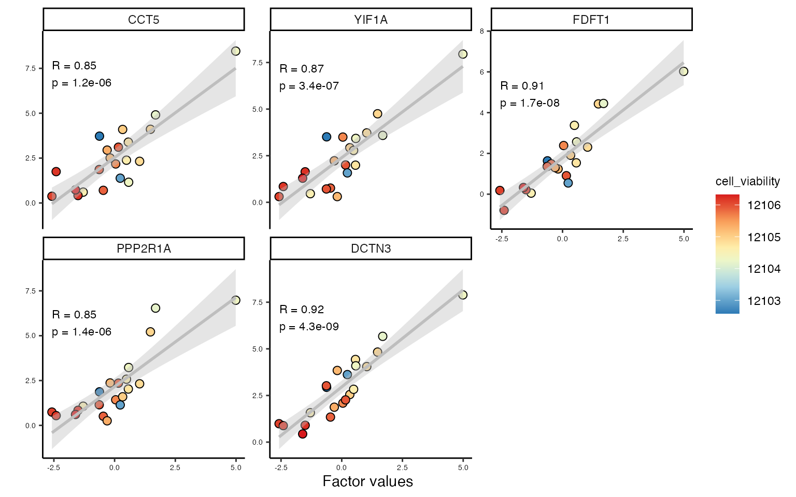
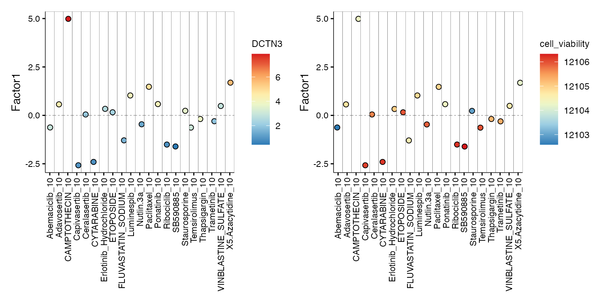

Data integration
Source:vignettes/integration_across_modalities.Rmd
integration_across_modalities.RmdHigh throughput transcriptomic screens present a challenge of combining information across modalities to identify patterns and relationships. Here we present an approaches using unsupervised variance decomposition with Multi-Omics Factor Analysis (MOFA).
In this vignette we show how to integrate multiple data modalities, including gene expression, pathway enrichment, chemical descriptors, and phenotypic readouts such as cell viability. While the example dataset itself lacks power to build stable models, we wanted to demonstrate the basic functionality, using the macpie framework.
1. Import screen data
First import data by providing either a directory, or a vector of directories (for multiple plates) to the Read10X function, as described in the previous vignettes, such as Quality control.
2. Data collection
In this section we will collate data from across various modalities regularly associated with transcriptomic screens. We will show how to import sample annotations, and integrate them with gene expression and pathway enrichment.
2.1 Import external annotations
Below is an example of loading additional sample information, in this case cell viability and confluence, and merging it with metadata based on the column Well_ID.
file_path <- system.file("extdata", "PMMSq033/PMMSq033_CTG_cellcount.csv", package = "macpie")
cell_viability <- read.csv(file_path) %>%
#mutate(
# cell_viability = scale(cell_viability)[, 1],
# cell_confluence = scale(cell_confluence)[, 1]
#) %>%
dplyr::select(Well_ID, cell_viability, cell_confluence)
# Modify metadata
mac@meta.data <- mac@meta.data %>%
left_join(cell_viability, by = "Well_ID") %>%
column_to_rownames("Barcode") #tidyverse does not preserve row names that Seurat needs2.3 Calculate pathway enrichment
enrichr_genesets <- download_geneset("human", "MSigDB_Hallmark_2020")
mac <- compute_multi_enrichr(mac, genesets = enrichr_genesets, p_value_cutoff = 0.05)2.4 Calculate chemical descriptors of compounds
If your perturbations are small molecules, it is straightforward to add information on chemical descriptors based on the smiles column in your data.
# If you don't have smiles in your metadata, calculate them based on the compound ID
#mac <- compute_smiles(mac, compound_column = "Compound_ID")
mac <- compute_chem_descriptors(mac)3. MOFA workflow
MOFA provides a framework for the integration of multiomics datasets, by identifying “Factors” (principal components) that define main sources of variation in the dataset, across the modalities. In order to identify them, we will follow the MOFA workflow.
The key functions include:
- create_mofa (import multiomics data.frame in long format)
- prepare_mofa (set traning options)
- run_mofa (train the MOFA model)
The macpie package streamlines analysis with MOFA, by extracting all multimodal data that is required for the first step and creating the MOFA object for the user.
To load data into a “MOFAobject” and start the analysis, we us build_mofa, a function that prepares a MOFA object based on
- genes and pathways (previously calculated, in slot @tools)
- chemical descriptors (previously calculated, optional)
- any other tables in the slot @tools containing a column “Treatment”, with unique treatment ids
In the first instance we will try to identify Factors that capture variation in both chemical descriptors and gene expression / pathway enrichment.
3.1 MOFA object
We include metadata columns that define cell viability and confluence.
MOFAobject <- build_mofa(data = mac,
combined_ids = treatments, #unique samples IDs (treat+conc) to be used
metadata_columns = c("cell_confluence", "cell_viability"), #vector of metadata columns to include in the analysis
de_metric = "metric", #column name of data for DE analysis, such as:
#"log2FC" or "metric" (test statistic)
de_pval_thresh = 0.01,
de_padj_col = "p_value_adj",
pathway_pval_thresh = 1, #p-value cutoff for pathway significance
pathway_pval_col = "Adjusted.P.value", #column used for p-valye cutoff
pathway_score_col = "Combined.Score" #column used as pathway enrichment metric
)
MOFA2::plot_data_overview(MOFAobject)
3.2 Scaling
If groups or modalities (views) have different ranges/variances, it is good practice to scale them to unit variance by modifying the model options scale_views and scale_groups (default is FALSE).
data_opts <- MOFA2::get_default_data_options(MOFAobject)
data_opts$scale_views <- TRUE
data_opts$scale_groups <- TRUE3.3 Model parameters
Modify model and training parameters here, including likelihoods of distributions, number of iterations and usage of GPU.
model_opts <- MOFA2::get_default_model_options(MOFAobject)
train_opts <- MOFA2::get_default_training_options(MOFAobject)
train_opts$seed <- 1 # for reproducibility3.4 Running the model
MOFAobject <- MOFA2::prepare_mofa(MOFAobject,
data_options = data_opts,
model_options = model_opts,
training_options = train_opts)
model <- MOFA2::run_mofa(MOFAobject, use_basilisk = TRUE)3.5 Investigation of Factors
This plot allows us to evaluate whether the Factors are correlated, in which case they should be eliminated from the future analyses.
MOFA2::plot_factor_cor(model)
3.6 Variance decomposition
After running the model, it is now easy to follow the standard MOFA worklow. We can quantify the amount of variance explained (𝑅2) by each factor, for each data modality.
head(model@cache$variance_explained$r2_per_factor$group1) # group 1
#> cell_confluence cell_viability genes pathways chem_descriptors
#> Factor1 3.829609e+01 1.993528e+01 34.349394 0.0814557076 0
#> Factor2 7.075602e+00 3.376725e+01 5.242789 0.0003278255 0
#> Factor3 1.805512e+01 1.282811e-01 9.765500 0.0020205975 0
#> Factor4 4.338485e+00 1.340080e+01 3.388435 0.0007033348 0
#> Factor5 -4.768372e-05 4.529953e-04 3.786212 0.0009715557 0It seems that the first factor captures a lot of variability across all modalities, with the least for pathways (8.1%) and chemical descriptors (0%). This could be explained by the fact that a lot of information content in pathways is directly contained in gene expression, which is already captured by MOFA. Also, the number of molecules might be too small for their chemical properties to be be able to explain variability in the dataset.
p<-MOFA2::plot_variance_explained(model)
p<-p+theme(axis.text.x = element_text(angle = 45, hjust = 1))
p
3.7 Visualisation of feature weights
If “Factors” correspond to principle componenets of PCA analysis, then “weight” corresponds to “loadings”. A positive weight for a feature, in this case genes such as PPP2R1A and DCTN3, marks a strong relation to Factor 1. The sign of the weight indicates the direction of the effect, so features PPP2R1A and DCTN3 have higher levels in the cells with positive Factor 1 values, while cell viability has the opposite.
p1<-MOFA2::plot_top_weights(model,
view = "genes",
factor = 1,
nfeatures = 5
)
p2<-MOFA2::plot_top_weights(model,
view = "cell_viability",
factor = 1,
nfeatures = 5
)
p1+p2
We can then use MOFA’s scatter plots to visualise factor values, and establish whether relationship between features and factor values is linear
p <- plot_data_scatter(model,
view = "genes", # view of interest
factor = 1, # factor of interest
features = 5, # number of features to plot (they are selected by weight)
add_lm = TRUE, # add linear regression
color_by = "cell_viability"
)
p
DCTN3 encodes dynactin subunit 3, a part of dynactin motor complex essential for intracellular transport and formation of mitotic spindle. High DCTN3 may influence cell viability in cells treated with microtubule inhibitors. Similarly, PPP2R1 is a serine/threonine phosphatase that regulates chromatin remodeling, and high levels of PPP2R1A may be detrimental in combination with epigenetic drugs.
p1<- plot_factor(model,
factors = c(1),
group_by = "sample",
color_by = "DCTN3"
) + theme(axis.text.x = element_text(angle = 90, vjust = 0.5, hjust = 1))
#p1
p2<- plot_factor(model,
factors = c(1),
group_by = "sample",
color_by = "cell_viability"
) + theme(axis.text.x = element_text(angle = 90, vjust = 0.5, hjust = 1))
p1+p2
DCTN3 expression appears to stratify differential cellular responses to diverse therapeutic agents. High DCTN3 levels correlate with reduced viability in cells treated with camptothecin, 5’-azacytidine, and paclitaxel - drugs that rely on active cell division and efficient mitotic machinery for their cytotoxic effects, suggesting that DCTN3-dependent trafficking and spindle dynamics may sensitize cells to genotoxic stress. Conversely, low DCTN3 expression is associated with increased viability in response to capivasertib, cytarabine, ribociclib, and SB590885, potentially reflecting a drug-tolerant state marked by reduced proliferation, impaired retrograde transport, and altered checkpoint engagement.